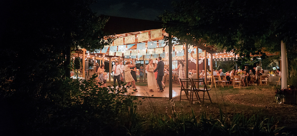

I was born in Milford Memorial Hospital in Milford, Delaware
(that's Sussex County for those interested). Delivered by the same doctor
who delivered my two older sisters. I went to Boston University for
undergraduate and spent several years after college working in marine mammal
rescue and rehabilitation. My volunteer opportunities and work for nonprofits have taken me
all over the world and I hope to bring a similar spirit of giving and adventure to
my career in web development. I've spent many of my years braving the winters on the Maine
coast and am excited to be back in the sunny embrace of
I was born in Milford Memorial Hospital in Milford, Delaware
(that's Sussex County for those interested). Delivered by the same doctor
who delivered my two older sisters. I went to Boston University for
undergraduate and spent several years after college working in marine mammal
rescue and rehabilitation. My volunteer opportunities and work for nonprofits have taken me
all over the world and I hope to bring a similar spirit of giving and adventure to
my career in web development. I've spent many of my years braving the winters on the Maine
coast and am excited to be back in the sunny embrace of
My wife Leah and I lived in Boulder for three years (before returning to Maine for two) while she pursued her Masters
Degree in Counseling Psychology. We were married just over two years ago out on
Cure Organic Farm.
